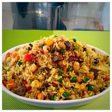

Home
Fried Rice

Description: A very popular Nigerian dish, commonly served with chicken, shrimp and colesaw
Ingredients
- 2 cups cooked rice
- ½ cup chicken stock
- 3 tablespoon oil for frying
- 1 cup onion diced
- 1 cup mixed Vegetables Carrots, Sweet Peas, Sweet Corn and green beans
- ½ teaspoon thyme
- 1 teaspoon Curry powder
- 2 scallions diced
- 1 chicken stock cube
- 1 cup beef liver cubed
- salt to taste
- ¼ teaspoon Cayenne pepper
Steps
- Add the boiled rice to the stock in a medium pot and cook on medium heat until the water is dried up.
- Preheat the oil in a pan on medium to high heat, throw in the onions, and fry for a minute or two; add the scallions, mixed vegetables, thyme, curry powder, salt, and stock Cube.
- Throw in the beef liver and rice — Stir-fry for about 3 to 5 minutes on high heat.
- Take it off the heat and serve.